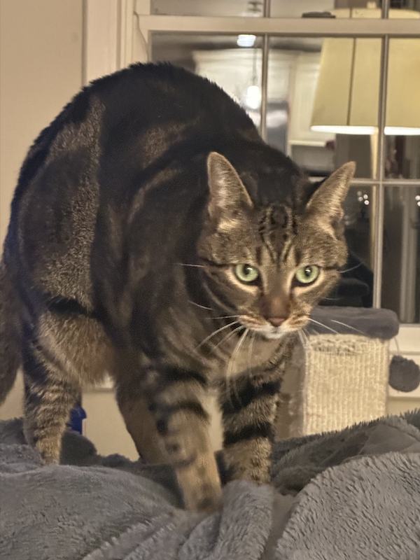

About

Hi again! I'm Jack Kinney, a senior at Boston University pursuing a Bachelor of Arts in Computer Science with a passion for software development and data science. I'm dedicated to applying my skills in problem-solving, machine learning, and full-stack development to create impactful solutions.
Throughout my academic journey, I’ve gained hands-on experience through various projects, including building predictive models, optimizing algorithms, and developing full-stack applications.
I thrive in collaborative environments where I can learn from others while contributing my skills to drive projects forward. I’m particularly interested in software engineering, data analysis, and machine learning, and I am excited to pursue opportunities that allow me to apply my knowledge and grow as a developer.
Here is a pic of my family cat Winston!